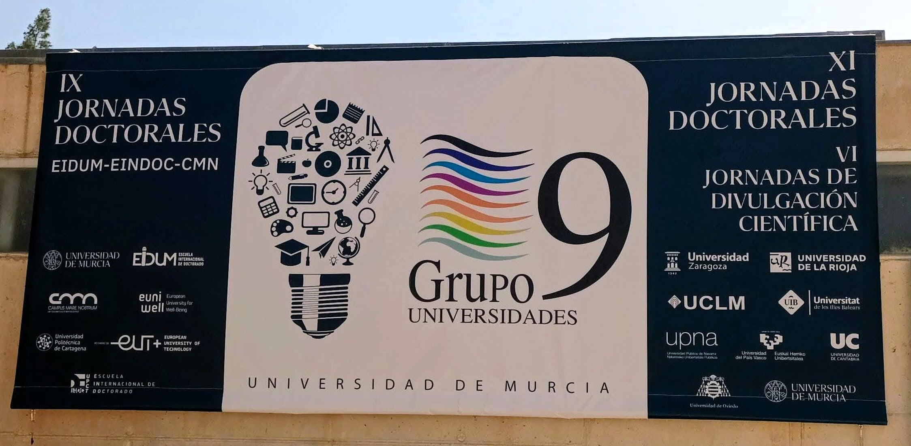
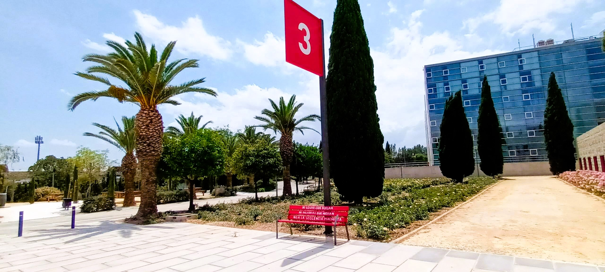
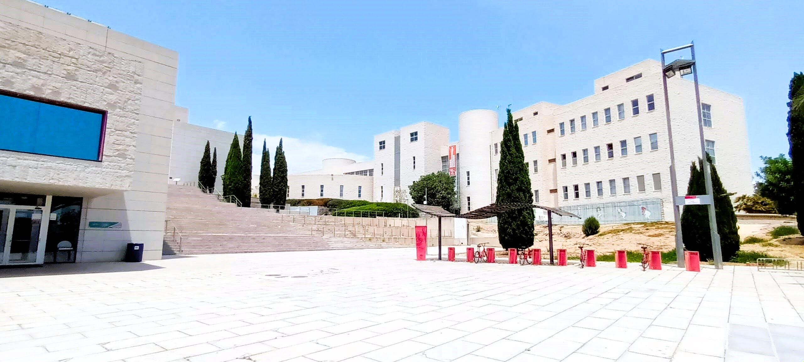
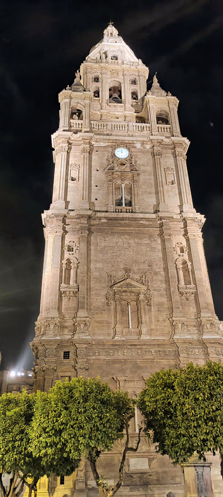
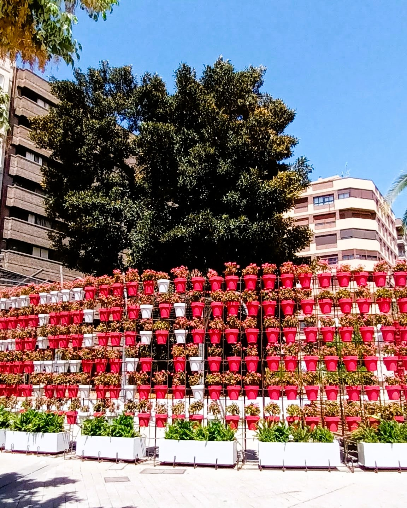
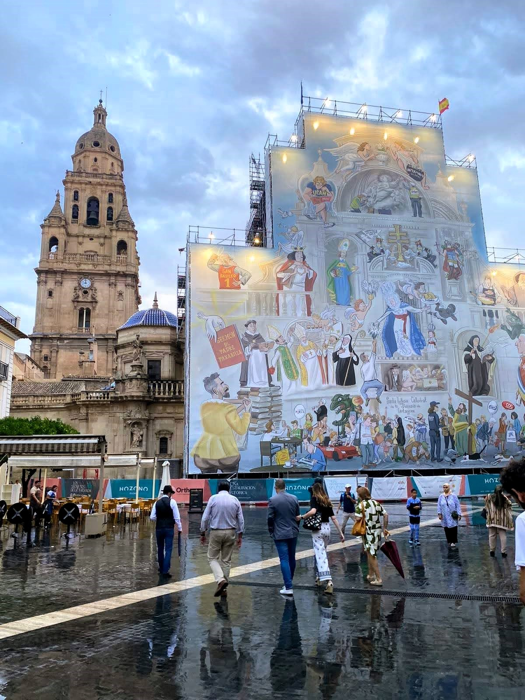

Murcia and the G9 XI Doctoral Congress: A Memorable Experience
Sharing my experiences and insights from the G9 XI Doctoral Congress in Murcia, exploring both the academic sessions and the vibrant city.
Again, returning to posting after a long break… I always plan to post something, but it keeps getting postponed. Life gets in the way, work gets in the way, and the PhD gets in the way. I must find a way to keep a stricter schedule, at least posting once per month. I really enjoy writing these posts, as they are a way to practice my writing and help me find my writing voice.
After this short detour, let’s focus on the matter at hand: my participation in the last couple of weeks in two congresses, the G9 XI Doctoral Congress in Murcia and the XXXIII ACEDE International Congress in Valencia. I will divide this into two posts, discussing the congresses and the cities where they took place.
G9 XI Doctoral Congress in Murcia
A few months ago, Cantabria’s Doctoral School announced that we could apply to represent the university at the G9 XI Doctoral Congress in Murcia. To apply, we needed to prepare a poster, and the two best posters from each doctoral area would be selected to represent the school at the congress. My Figueira Gorda project was at a stage where I could prepare a poster, so I decided to give it a go. I was thrilled to be selected to represent the University of Cantabria. You can check out my poster here.

The G9 consortium is a group of public Spanish universities that are the sole public universities in their respective regions. Although the University of Murcia does not meet this criterion, as the region also includes the Polytechnic University of Cartagena, it became an associate member in 2023. The goal of the consortium is to support each other and help develop research and faculty across member institutions. I had attended a few online courses offered by the consortium in the past, which exposed me to faculty from other Spanish universities.
It was a truly enjoyable experience. Although it was a multi-theme congress, all of social sciences were grouped together in the same session, so each of us had a very short time slot to present our work, preventing us from delving into the details of our research. It was still fascinating to be exposed to different research fields and methodologies. It was enlightening to see what other doctoral students are doing and how they are approaching their studies.
One of the main takeaways for me was getting to know and interact with my doctoral colleagues from the University of Cantabria. Not being there physically means I often miss out on this. I don’t get to know my colleagues or understand the dynamics of the school. I don’t get to discuss research projects from completely different fields, learn about them, exchange ideas, and even identify potential collaborations. During the three days we were together, I experienced a condensed version of this interaction. I was very positively surprised by my colleagues from Cantabria. Even though we didn’t know each other beforehand (which was true for most of them as well), we immediately developed a sense of chemistry and camaraderie, and we all supported each other during the congress.


Additionally, I was really impressed with the Universidad de Murcia campus. Established in 1272 by King Alfonso X of Castille, Universidad de Murcia is the third oldest in Spain and the thirteenth oldest in the world. Despite its historical roots, the university boasts a state-of-the-art campus. Located to the north of the city and served by a tram line with several stops that circulate the campus, it features a quarter filled with modern buildings that house most of the university’s schools. Due to a flight mismatch, I arrived a day earlier and had a morning to spare before the congress started. I took the opportunity to visit the campus and work in the central library. This huge multi-story building is very well designed, with a large central atrium that lets in natural light, ensuring that students have ample natural illumination while studying.


The city itself is relatively small, with spacious neighborhoods and large green spaces, and is crossed by a major avenue that also hosts the tram line, making it very convenient to move around. The city’s greenery contrasts with the surrounding dry, semi-desert environment. The historical part of the city center is relatively small, as part of the historical quarter was demolished in the 1950s for the construction of Gran Via Escultor Francisco Salzillo. This restructuring, aimed at modernizing the city and creating a main artery to facilitate traffic flow, amputated part of the old quarter. The contrasts and inconsistencies are still visible today, with 1960s buildings sitting next to XVII and XVIII century ones. However, what remains of the city center is impressive. The yellow sandstone buildings highlight the tones of the local sun, creating a striking combination. Although I didn’t have as much time to explore the city as I would have liked, I was struck by the beauty of the buildings in the old city. For me, the highlight of the congress was the literary tour of the old town, guided by Paco López Mengual, a grocer and published author. His talented storytelling brought the buildings to life and truly connected us to the city. I am looking forward to reading a couple of his books. I was particularly impressed by the story of Santo Domingo’s Ficus, a massive Ficus macrophylla tree that sits in the central city square. This tree, a beloved symbol of the city, clings to life in the harsh summer Murcian climate. You can learn more about the tree by reading this article by Paco López Mengual himself.

The congress keynote talks were also interesting and addressed current and relevant issues like the usage of AI in academia and the importance of scientific communication in today’s post-truth, social media-driven world.
Overall, it was a great and enriching experience, and I might apply to the congress again next year. Until then, I will keep my eyes open for more activities promoted by the G9 consortium.
Citation
@online{granja-correia2024,
author = {Granja-Correia, João},
title = {Murcia and the {G9} {XI} {Doctoral} {Congress:} {A}
{Memorable} {Experience}},
date = {2024-06-28},
url = {https://joao.granja-correia.eu/blog/blog_20240628_Murcia_G9},
langid = {en}
}